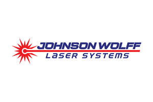

Trade Mark Journal No.2025/045 7 November 2025
UK00004282583 23 October 2025 (9,35,37)

- Class 9
- Lasers.
- Class 35
- Rental of office machines and equipment; Rental of office machinery and equipment; Business assistance relating to starting and running a franchise; Provision of assistance [business] in the establishment of franchises; Administration of the business affairs of franchises; Assistance in business management within the framework of a franchise contract; Business assistance relating to the establishment of franchises; Provision of assistance [business] in the operation of franchises; Advice in the running of establishments as franchises; Assistance in product commercialization, within the framework of a franchise contract; Advisory services (Business -) relating to the establishment of franchises; Providing assistance in the field of business management within the framework of a franchise contract; Business advisory services relating to the establishment and operation of franchises; Advisory services (Business -) relating to the operation of franchises; Providing assistance in the field of product commercialization within the framework of a franchise contract; Advisory services relating to the operation of franchises; Assistance in franchised commercial business management; Business management assistance in the field of franchising; Business advertising services relating to franchising; Business management for a trade company and for a service company; Business assistance relating to franchising; Franchising (Business advisory services relating to -); Business advisory services relating to franchising; Business advice relating to franchising; Franchising (Business advice relating to -); Providing assistance in the management of franchised businesses; Business management advisory services relating to franchising; Business acquisitions; Provision of business information relating to franchising; Franchising services providing business assistance; Provision of business advice relating to franchising; Merchandising; Consultancy regarding the organization or managing of a trade company; Franchising services providing marketing assistance; Business advice and consultancy relating to franchising; Brand strategy services; Brand creation services; Sales promotions at point of purchase or sale, for others; Rental of office equipment; Business management of wholesale outlets.
- Class 37
- Cleaning of furniture; Cleaning services; Building cleaning; Domestic cleaning; Cleaning of machines; Car cleaning; Cleaning of windows; Cleaning of offices; Window cleaning; Jewellery cleaning; Automobile cleaning; Cleaning of gullies; Cleaning of property; Cleaning of factories; Street cleaning; Cleaning of shops; Cleaning of automobiles; Cleaning of buildings; Cleaning of schools; Vehicle cleaning; Cleaning of streets; Cleaning of hospitals; Cleaning of vehicles; Cleaning of structures; Cleaning of facades; Cleaning of hotels; Hygienic cleaning [buildings]; Cleaning of monuments; Office cleaning services; Industrial cleaning services; Mechanical cleaning of waterways; Clearing and cleaning gutters; Cleaning of drains; Cleaning of furnishings; Maintenance of cleaning machines; Hygienic cleaning [vehicles]; Facade cleaning; Tube cleaning services.
TUUV LIMITED